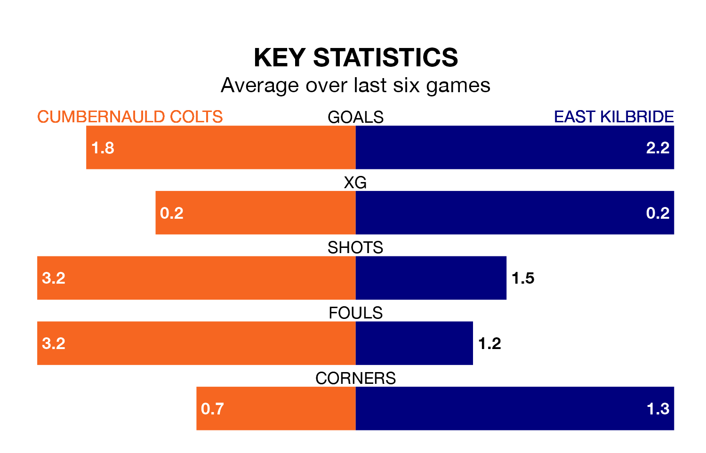

Two of Highland and Lowland Football Leagues's top sides face each other at the Broadwood Stadium in Saturday's kick-off, when third-placed Cumbernauld Colts host table-topping East Kilbride.
Cumbernauld Colts have picked up 13 wins and five draws from 22 games so far this season, and sit seven points below the visitors going into the 3pm match.
The Kilby, meanwhile, have won 16 and drawn three of 21, picking up 51 points.
With 61 goals in 21 games so far this season, East Kilbride are the league's second-highest scorers with 2.9 goals per game. And they are conceding fewer than average, letting in 24 goals at a rate of 1.1 per game.
Cumbernauld Colts are also above average scorers, with 2.1 goals per game, compared to a league average of 1.8. They have conceded 1.2 goals per game.
In the last five years, Cumbernauld Colts and East Kilbride have played each other on seven occasions. Cumbernauld Colts won two of them, East Kilbride four, and they drew once.
On average, Colts scored 0.9 goals and the Kilby 2.1 in those matches.
Their last meeting was on November 11, when East Kilbride won 2-0 at home.
Colts are in reasonable form in Highland and Lowland Football Leagues, with three wins and two draws from their last six games.
With three wins and a draw over that period, the Kilby's form is slightly worse – they have taken 10 points from 18, compared to the home side's 11.
Cumbernauld Colts's last match was on December 30, a 2-1 win against Edusport Academy, with Callum Home and William Mortimer getting the goals for Colts.
East Kilbride drew 0-0 with Edusport Academy last time out, on January 6.
Updated: 13:38 (UTC), 10/01/24